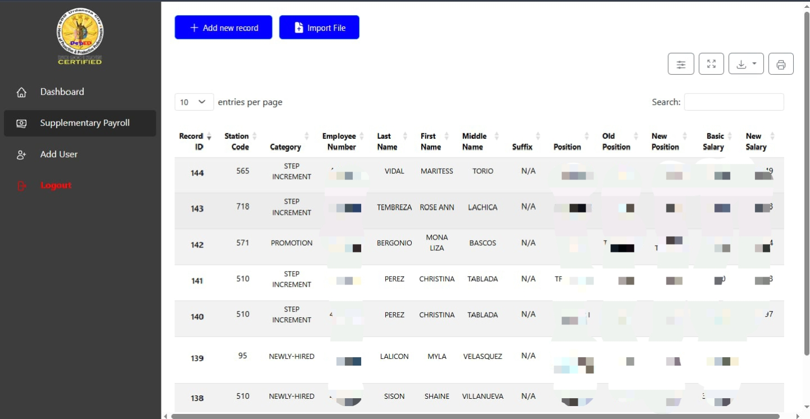
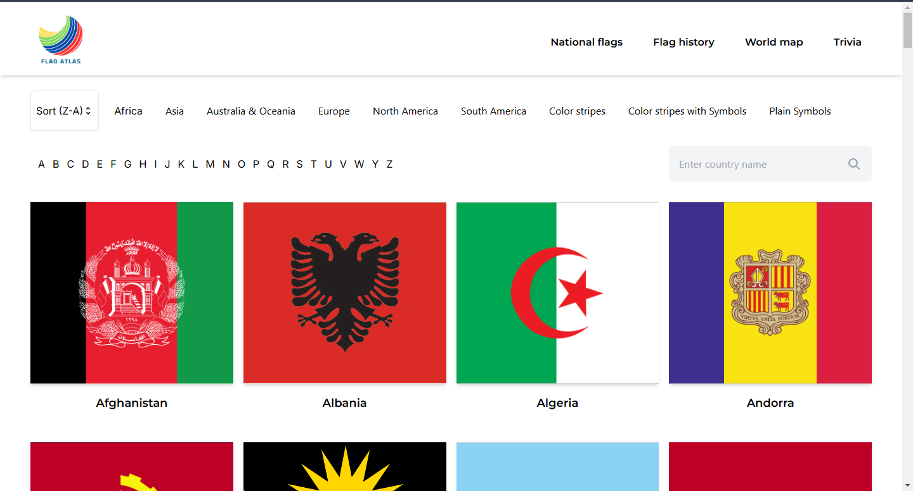

Web Projects

Supplementary Payroll
Bootstrap, NodeJS, MySQLThis system allows the admin user to compute the supplementary payroll detail for both teaching and non-teaching employees under the Schools Division Office of Urdaneta City
View project details
Flag Atlas
React, TailwindCSS, NodeJS, MySQLAn interactive website for learning the different country flags of the world and geography
View project details
MedAid
PHP, Bootstrap, MySQLA Symptom Checker API and patient portal for the school clinic of Pangasinan State University Urdaneta Campus
View project details